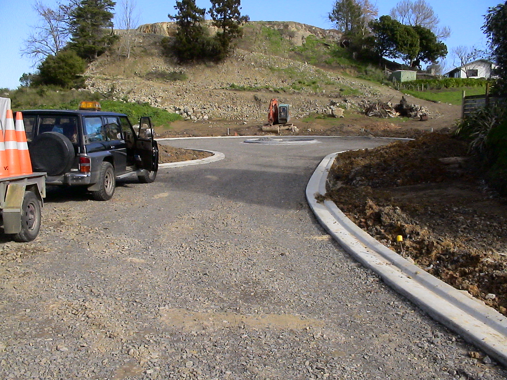

A Brief Introduction
Valley Civil Survey Ltd began in September 2000 as a registered partnership of Julian and Annette Hogan, operating as a civil engineering consultancy based in the eastern Waikato town of Paeroa, New Zealand. Since startup Valley Civil Survey has contributed to more than 200 civil engineering projects for local authorities, contractors, consultants and land developers in the Hauraki, Thames-Coromandel, Waikato and Bay of Plenty districts, Auckland and Hamilton. Valley Civil Survey specializes in engineering investigation, design and construction control for land development and infrastructure maintenance projects, which includes:
- Asset surveys.
- Preliminary investigation.
- Civil engineering surveying.
- Highway design.
- Construction set out.
- Subdivision infrastructure design (earthworks, roads, stormwater, sewerage, services etc).